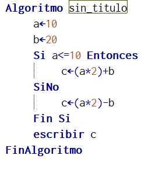
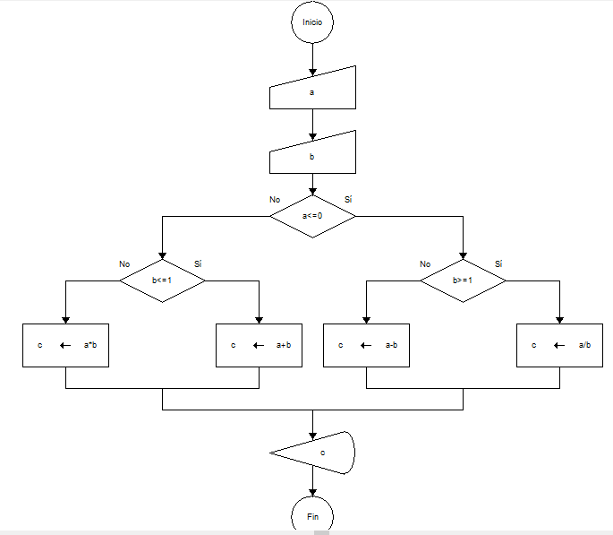
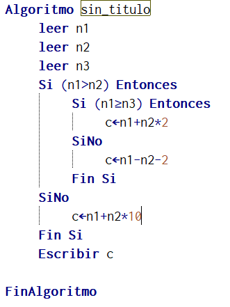

Pregunta de Elección Múltiple unica respuesta Pregunta 1.- Operador necesario dentro dentro de la condición Respuestas Opción 1 Aritmético Opción 2 Lógico Opción 3 De comparación Opción 4 Ninguno Retroalimentación Incorrecto Incorrecto los operadores de comparación son necesario ya que con ellos se permite la toma de desiciones. Incorrecto Solución Incorrecto (Retroalimentación) Incorrecto (Retroalimentación) Opción correcta (Retroalimentación) Incorrecto (Retroalimentación) Pregunta 2.-El resultado de la siguiente expresión not((10*2)<>(100/2) and (2^3=6)) es Respuestas Opción 1 Verdadero Opción 2 Falso Opción 3 No se puede resolver ya que después del operador And se tiene una sola validación. Opción 4 No se puede resolver ya que después del operador And no tiene operador relacional. Retroalimentación Opción correcta Incorrecto Incorrecto Incorrecto Solución Opción correcta (Retroalimentación) Incorrecto (Retroalimentación) Incorrecto (Retroalimentación) Incorrecto (Retroalimentación) Pregunta 3.- Con el siguiente algoritmo  se puede decir que c vale Respuestas Opción 1 0 debido a que toma el la instrucción de abajo Opción 2 40 ya que por ser menor o igual a 10 duplica el valor 4 veces Opción 3 40 ya que por ser menor o igual a 10 duplica el valor de a y suma 20 Opción 4 0 ya que por ser menor o igual a 10 duplica el valor a y resta 20 Retroalimentación Incorrecto Incorrecto Opción correcta Incorrecto Solución Incorrecto (Retroalimentación) Incorrecto (Retroalimentación) Opción correcta (Retroalimentación) Incorrecto (Retroalimentación) Pregunta 4..- Al aplicar a=-3 y b=-2 en el siguiente diagrama de flujo  C vale Respuestas Opción 1 0 Opción 2 1 Opción 3 -1 Opción 4 2 Retroalimentación Incorrecto Incorrecto Opción correcta Incorrecto Solución Incorrecto (Retroalimentación) Incorrecto (Retroalimentación) Opción correcta (Retroalimentación) Incorrecto (Retroalimentación) Pregunta 5.- Al aplicar los valores 2, -3 , -2 en el siguiente algoritmo  C vale Respuestas Opción 1 -1 Opción 2 -2 Opción 3 -3 Opción 4 -4 Retroalimentación Incorrecto Incorrecto Incorrecto Opción correcta Solución Incorrecto (Retroalimentación) Incorrecto (Retroalimentación) Incorrecto (Retroalimentación) Opción correcta (Retroalimentación)